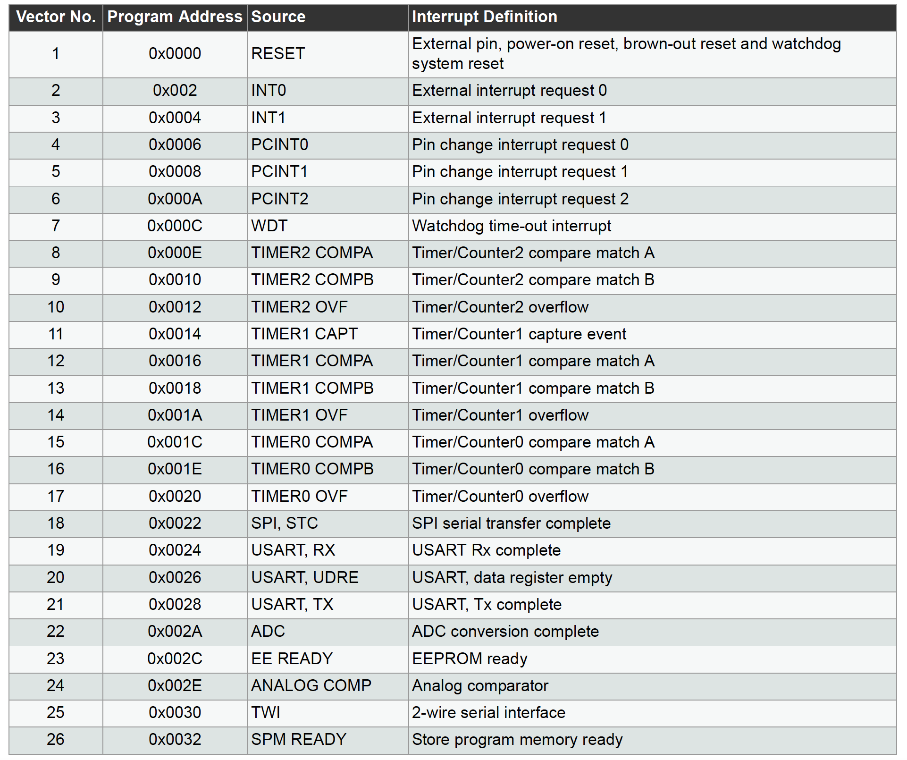
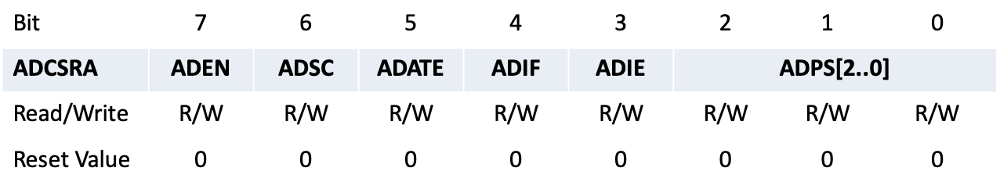

class: title-slide count: false .logo-title[] ## ELECTENG 311 # Electronics Systems Design ### Interrupts .TitleAuthor[Duleepa J Thrimawithana] --- layout: true name: template_slide .logo-slide[] .footer[[Duleepa J Thrimawithana](https://www.linkedin.com/in/duleepajt), Department of Electrical, Computer and Software Engineering (2022)] --- name: S1a # Learning Objectives - Why are interrupts important? - Understanding the differences between interrupts and polling - Why do we need interrupts in the project? - Understanding Interrupt Service Routine (ISR) - How are interrupts implemented by the microprocessor? - Learning to configure and use interrupts in the ATmega328P - Understanding RAM allocation - Understanding how the stack, heap and data segment spaces are used - Understanding context switching --- name: S1b # Lecture Quiz - The lecture quiz is now available on Canvas - Quiz is available for 3 days and allows 3 attempts - Best of the 3 attempts taken as the final score --- class: title-slide layout: false count: false .logo-title[] # Input/Output Events ### How to Handle I/O Events? --- layout: true name: template_slide .logo-slide[] .footer[[Duleepa J Thrimawithana](https://www.linkedin.com/in/duleepajt), Department of Electrical, Computer and Software Engineering (2022)] --- name: S2 # I/O Events - I/O peripherals enable the microprocessor in an MCU to interface with external electrical signals - In our project we use GPIO, UART, ADC and Timer peripherals - The peripherals often take considerable amount of time to complete a given task - The time taken can be many system clock cycles and during this time the microprocessor can be executing code - For example, a UART transmitting at a low baud rate takes a considerable amount of time to send a byte of data - The peripherals also have to respond to external signals which are non-deterministic (i.e. we don’t know when they will occur) - When we are trying to detect such signals, the microprocessor have to communicate regularly with the peripherals checking to see if they have occurred - For example, when checking for a push-button press, we have to regularly scan the GPIO pin it is connected at --- name: S3 # Responding to I/O Events - So far we used the polling method to respond to events (e.g. a peripheral completing a task or responding to an external signal) - When polling, which is also called “blocking” or “busy waiting”, the microprocessor waits to respond to the event - Waiting for peripherals to complete tasks and responding to non-deterministic external signals keep the microprocessor unnecessarily busy - To be efficient, the microprocessor needs to execute code in response to these events at the correct time rather than waiting for them to occur - For example, write a byte of data to UART transmit buffer (UDR0) when it is just emptied rather than waiting it to be empty - The second method to respond to these events, is to use interrupts - Interrupts enable the microprocessor to respond to events at the correct time rather than waiting for them to occur --- name: S4 # Polling .center[ ] - So far we used polling when we interacted with the ADC - We executed code continuously in the form of a loop to check the state of a given register bit - For example, with ADC we checked if ADIF is set - The register bit was checked as part of the normal program execution while halting the execution of the rest of the program - Once the appropriate state was detected, the action was taken and continued with the rest of the program --- name: S5 # Benefits & Drawbacks of Polling - Benefits of polling include - Simple to implement, and does not require any hardware - The processor is always in a known state when executing code, so race conditions and variable states do not have to be managed - Drawbacks of polling include - If multiple peripherals require checking, it must do them in a round-robin fashion adding a delay between each check of a given peripheral - If two peripherals require servicing, they will be done in the order they are checked, which may not be the order of priority - Most of the time, the checking does not result in any work being done, so this processor time has been wasted - It can be very difficult to get the processor to run other code in between polling all of its peripherals --- name: S6 # Interrupts .center[<img src="img/Interrupt.png" height="220">] - Interrupts were introduced explicitly to handle events - When an event triggers an interrupt, the normal program execution is halted, and a special function is executed - This special function is called the Interrupt Service Routine (ISR) - Once the ISR has completed, the processor returns to the code it was executing before the interrupt occurred --- name: S7 # Benefits & Drawbacks of Interrupts - Benefits of interrupts include - Interrupts can respond to an event almost immediately - The interrupts can be given priorities to make sure the most important events are always responded to quickly - The processor can be performing useful work while waiting for an interrupt to occur - Drawbacks of interrupts include - Extra hardware is required to implement interrupts - The state of the processor is not known when an interrupt occurs - Developing the code is more difficult, as the program must understand and handle any state which can be modified by an interrupt - Memory management becomes more complex --- name: S8 # When to Use Interrupts - Not every event is best handled by an interrupt - Sometimes it is easier to use polling - Sometimes you have sufficient processing resources that the penalty for polling is insignificant - Interrupts should be used when an event has 3 main characteristics - Asynchronous: The event can occur at any time, and there is no way to predict when this will be - Urgent: The event needs to responded to immediately - Infrequent: The event is not occurring continuously - An emergency shutdown event (such as over current) is an example of an event which is a good candidate for using an interrupt - In contrast, if transmitting a few bytes of data over UART after processing some data, then in this example polling may be used --- name: S9 # Interrupts in Your Project .center[<img src="img/PIControlConcept.png" height="160">] - We need to measure output voltage, compare with a reference and pass through a digital PI controller - The output of the PI controller is the **Compare Match** value loaded to generate the PWM output - While doing the above, we also want to listen to user input requesting to change the output voltage - It will be challenging to do both these tasks if we poll the ADC measurements - We can setup the ADC to auto-trigger on a timer and use ADC **Conversion Complete Interrupt** - At the end of each ADC conversion, we need to process the measurement using the PI controller and update the **Compare Match** value - In parallel, using ADC **Transmit Complete Interrupt** we should send measured voltage via UART --- class: title-slide layout: false count: false .logo-title[] # Interrupt Service Routines ### Understanding the Fundamentals --- layout: true name: template_slide .logo-slide[] .footer[[Duleepa J Thrimawithana](https://www.linkedin.com/in/duleepajt), Department of Electrical, Computer and Software Engineering (2022)] --- name: S10 # What is an ISR? - An MCU executes a normal program in and orderly sequence determined by the user - When an interrupt occurs, the normal program execution is halted, and a special function is executed - This function is called the Interrupt Service Routine (ISR) - An ISR can be thought of as a function with no return value, and no input arguments - As always, there are exceptions, but in general this is the case - The only way for an ISR to communicate with the rest of the program is through variables with shared scope - These are global variables with file level or unlimited scope (i.e. static or extern global variables) - Once the ISR has completed, the processor returns to the code it was executing before the interrupt occurred - Each interrupt normally has its own ISR - These ISRs will be executed in the order of their interrupt priority - ISRs are not called as part of the normal program execution --- name: S11 # How to Use an ISR .codes[ ```c //An ISR does not take any arguments, and does not return a result ISR(NAME_vect){ //Do something } void function_1(void){ //Do something } void function_2(void){ //Do something } int main(void){ while (1){ //We can call our functions, but NOT an ISR function_1(); function_2(); } } ``` ] --- name: S12 # ISR Communication - As the ISR cannot be passed arguments or return a result, it can only communicate with the rest of the program by using global variables with file or unlimited scope - As the interrupt can occur at any time, any variables written by the ISR can be modified at any point during regular execution - Normally the compiler does not expect this, so we must use the *volatile* keyword to alert it - The *volatile* keyword prevents the compiler from optimizing the code under the assumption the variable will never change - Failure to use the *volatile* keyword can result in code that crashes or doesn’t work .codes[ ```c volatile uint8_t my_volatile_variable_1; //Global variable with unlimited scope extern volatile uint8_t my_volatile_variable_2; //Global variable with unlimited scope static volatile uint8_t my_volatile_variable_3; //Global variable with file scope int main(void){ //Do something } ``` ] --- name: S13 # ISR Communication Example .codes[ ```c //millisecond_counter is not changed by the main function. Therefore, the compiler might infer that the //millisecond_counter is never updated. In this case, millisecond_counter can never be greater than 1000. //So the code can be removed (optimized out). The volatile keyword tells the compiler that the variable //is updated outside the normal program execution, and prevents the code from being removed. volatile uint16_t millisecond_counter = 0; //This ISR is called by a timer every millisecond ISR(NAME_vect){ millisecond_counter++; } //This program toggles an LED every second int main(void){ TIMER_initialise_for_millisecond_interrupt(); LED_initialise(); while(1){ if (millisecond_counter > 1000) { //Check if 1 second has passed LED_toggle(); //Toggle the LED millisecond_counter = 0; //Reset the counter } } } ``` ] --- name: S14 # ISR Execution (PI) - The microcontroller has special hardware lines which can be set to signal an interrupt has occurred - The address of each ISR is stored at a dedicated location in the program memory (usually it is the first thing) in the form of a table - This table is called the “Interrupt Vector Table” - The position of the interrupt in this table also determines its priority - When an interrupt occurs, the microprocessor completes the current instruction, and stores the address of the next instruction (i.e. the program counter) on the stack - Then the address for the ISR of the interrupt that occurred is loaded by the processor to the program counter, and execution of ISR continues from that point - In ATmega328P global interrupts are disabled to avoid nested interrupts - Upon completing the ISR, the address stored on the stack is loaded back into the program counter, and execution resumes from that address - If other interrupts occurred while executing an ISR, they will be processed in the order of priority after completing the first one --- name: S15 # ISR Execution (PII) .center[] --- class: title-slide layout: false count: false .logo-title[] # Interrupts on ATmega328P ### Configuring and Using --- layout: true name: template_slide .logo-slide[] .footer[[Duleepa J Thrimawithana](https://www.linkedin.com/in/duleepajt), Department of Electrical, Computer and Software Engineering (2022)] --- name: S16 # ATmega328P Interrupts - The ATmega328P supports multiple interrupt sources and these include - GPIO level changes - UART receive complete, transmit buffer empty - ADC conversion completion - Timer compare match, overflow - The interrupt priority is fixed where lower addresses in interrupt vector table have a higher priority - All interrupt sources have their own interrupt enable bit that needs to be set - The global interrupt enable bit needs to be also set to enable interrupts - It takes a minimum of 4 cycles to execute the ISR address in the interrupt vector table - The microprocessor has to complete the instruction it was executing and store the contents of general purpose registers, program counter, as well as the status register before servicing an interrupt - Global interrupts are automatically disabled when an interrupt occurs and enabled when returning from an ISR --- name: S17 # ATmega328P Interrupt Pins - In the ATmega328P the external interrupt pins INT0 and INT1 are PD2 and PD3 - Any of the pin change interrupts (PCINTx) pins can also be used as interrupt sources - However they have a shared ISR .center[<img src="img/328PPins.png" width="320">] --- name: S18 # ATmega328P Interrupts Registers - There is one global interrupt enable bit (I-bit) which enables or disables all interrupts <table class="tg" style="undefined;table-layout: fixed; width: 600px; margin-left:auto; margin-right:auto;"> <colgroup> <col style="width: 200px"> <col style="width: 400px"> </colgroup> <thead> <tr> <th class="tg-dzaw"><span style="color:white">Register</span></th> <th class="tg-dzaw"><span style="color:white">Functionality</span></th> </tr> </thead> <tbody> <tr> <td class="tg-jayl">SREG</td> <td class="tg-jayl">AVR Status Register</td> </tr> </tbody> </table> - Interrupts associated with most peripherals are configured and controlled using bits in their own registers - There are usually two bits associated with an interrupt - Setting interrupt enable bit causes an interrupt to be triggered by an interrupt event - The interrupt flag bit is set whenever an interrupt event occurs regardless of whether the interrupt enable bit is set or cleared - The interrupt flag bit is cleared automatically when the ISR for the interrupt is executed - Alternatively it can be cleared by writing 1 to the flag - If an interrupt occurs when executing another ISR, the corresponding interrupt flag will be set so that the new interrupt can be serviced after returning from the current ISR --- name: S19 # Status Register (SREG) .center[] - I: *Global Interrupt Enable* must be set for interrupts to be enabled - The other bits are used by the processor and can be ignored - They contain information about the most recently executed instruction by the ALU --- name: S20 # The Interrupt Vector Table .center[] --- name: S21 # Interrupts Associated with Peripherals - From the interrupt vector table we can see that the peripherals we will use in the project have interrupts associated with them - USART0 has receive complete, transmit data register empty and transmit complete interrupts - UCSR0B has the interrupt enable bits and UCSR0A has the interrupt flag bits - ADC has a conversion complete interrupt - ADCSRA has both the interrupt enable and flag bits - TC0 has overflow, compare match A and compare match B interrupts - TIMSK0 has the interrupt enable bits and TIFR0 has the interrupt flag bits - There are more which you may wish to make use of - For example, the zero crossing detector that feeds INT0 can generate an interrupt that could be used to enable taking the set of ADC samples needed for the calculations - In this lecture, we will investigate the ADC conversion complete interrupt --- name: S22 # ADCSRA Register .center[] - ADEN: *ADC Enable* - ADSC: *Start Conversion* bit needs to be set to start each conversion in single conversion mode while in free running mode this bit only needs to be set for the first conversion - ADATE: *Auto Trigger Enable* allows starting an ADC conversion using a trigger signal - ADIF: *Interrupt Flag* is set after completing a conversion and cleared when executing the corresponding interrupt - ADIE: *Interrupt Enable* - ADPS[2..0]: *Prescaler Select* where 000 = 2, 001 = 2, 010 = 4, 011 = 8, 100 = 16, 101 = 32, 110 = 64, 111 = 128 --- name: S23 # ADCSRB Register .center[<img src="img/ADCSRB.png" width="600">] - .color-grey[ACME: *Analog Comparator Multiplexer Enable*] - ADTS[2..0]: *Auto Trigger Source* when ADATE bit is set, these bits selects which source will initiate an ADC conversion --- name: S24 # Configuring the ADC - Lets configure the ADC as per our ADC lecture - However, this time we will enable ADC **Conversion Complete Interrupt** - Remember that we configured the ADC to operate in auto trigger mode with TC0 overflow as source - We will sample ADC0 pin and use TC0 setup from timer lecture (i.e., an overflow every 10μs) - An ADC conversion will be auto triggered during overflow event following a conversion complete - Once an ADC conversion is completed and new data is available in ADCL + ADCH registers an interrupt will be generated .codes[ ```c void adc_with_interrupt_init(void){ ADMUX |= 1 << REFS0; //AVCC set as reference, ADC0 selected and results are right adjusted ADCSRA |= (1 << ADEN) | (1 << ADSC) | (1 << ADATE) | (1 << ADIE) | (0b110 << ADPS0); //Enable ADC, start conversion, setup auto-trigger, enable interrupts and set prescaler to 64 ADCSRB |= (0b100 << ADTS0); //Use TC0 overflow as auto- trigger source DIDR0 = 1 << ADC0D; //ADC0 buffer disabled } ``` ] --- name: S26 # Writing the ISR - The C language has no specific rules for interrupts - Creating the interrupt vector table and placing it in memory is handled by Atmel Studio - It also provides macros required for interrupts in < avr/interrupt.h > - An ISR can be declared using the name of the source as listed in the interrupt vector table with *_vect* added at the end - In this case we will use *ADC_vect* - In the ISR we are toggling PB5 while also reading and storing the new *ADC* value in a global variable .codes[ ```c //An ISR is declared ISR(source_name_vect) where source_name is as per interrupt vector table //ADC ISR is called when an ADC conversion is complete ISR(ADC_vect){ PIN_TOGGLE(PINB5); //Toggling PB5 to indicate ISR trigger ADC_value = ADC; //Storing ADCL and ADCH values in a global variable TIFR0 |= 1 << TOV0; //Clear the TC0 overflow flag to prepare for next conversion } ``` ] --- name: S27 # Completing the Code .codes_dense[ ```c #include <avr/interrupt.h> #include <avr/io.h> volatile static uint16_t ADC_value = 0; volatile static uint8_t current_state = 0; //ADC interrupt service routine ISR(ADC_vect){ PINB_TOGGLE(PINB5); //Toggling PB5 to indicate ISR trigger ADC_value = ADC; //Storing ADCL and ADCH values in a global variable current_state = NEW_VOUT; //Updating state to indicate new data available TIFR0 |= 1 << TOV0; //Clear the TC0 overflow flag to prepare for next conversion } int main(void){ tc0_init_FPWM_100k(); //Initializing TC0 to generate a 100kHz 50% D PWM adc_with_interrupt_init(); //Initializing ADC with auto trigger and interrupt PINB_OUT(PINB5); //Initializing PB5 as output current_state = WAITING_VOUT; //Updating state to indicate awaiting new data sei(); //Enabling global interrupts while (1){ } } ``` ] --- name: S28 # ISR Rules - ISRs are usually used to ensure the program responds quickly to certain events - The processor can only execute one ISR at a time - Therefore, ensure that your ISR is as short as possible - Do not use delays or long loops - Do not call expensive functions such as functions used to transmit data over UART - You should use the interrupt to handle time critical actions, and then set flags to indicate to the main loop that a task needs to be executed - For example, use the ISR to read data from the UART, and then set a flag to let the main loop know that there is new data available to process - This allows the UART peripheral to receive the next byte --- name: S29 # Interrupt Bugs - While interrupts are powerful, interrupting the execution flow of your program can introduce bugs if you are not careful - We discussed the volatile keyword, which prevents compiler optimizations from introducing bugs - Suppose your interrupt checks a flag to see if a buffer contains some data, and then transmits that data - If the interrupt occurs between the flag getting set and the data being put into the buffer you might transmit data that is not the last thing in the buffer - Similarly, when a multi-byte variable that is modified by an ISR is also used in a function they need to be atomically read/modified - Another issue associated with interrupts is stack overflow - We will discuss about this briefly in the following section of the lecture - You may learn about other problems and how to solve them in future courses - For now, try to keep your interrupt code as simple as possible --- name: S31 # Timing in the Project - So far we have learnt how to setup the PWM output, read V<sub>out</sub> using ADC and implement a PI controller - The PWM was setup to have a 100kHz frequency (i.e., 10µs time-period) - The ADC took 54µs to complete a conversion and takes a new V<sub>out</sub> reading every 60µs - The PI controller ideally needs to be modified to execute within under 60µs .center[] --- class: title-slide layout: false count: false .logo-title[] # RAM Usage ### Stack, Heap and Data Segment Spaces --- layout: true name: template_slide .logo-slide[] .footer[[Duleepa J Thrimawithana](https://www.linkedin.com/in/duleepajt), Department of Electrical, Computer and Software Engineering (2022)] --- name: S30 # RAM Allocation .left-column[ - Recall that RAM is one of the three core resources a microcontroller has - RAM is split into three sections - The Stack: Used for temporary storage of variables associated with functions and grows as functions are called, and shrinks as functions return - The Heap: Used for storing dynamic variables using malloc and it is set to a fixed size by the programmer - The Data Segment: Used for storage of variables with greater than function scope (static or global), which are allocated at compile time and is set to a fixed size depending on how many of these variables need to be stored ] .right-column[ .center[] ] --- name: S32 # RAM Considerations - The combined size of the stack, heap, and data segment cannot exceed the size of RAM - Running out of space is called a “stack collision” or “stack overflow” - You need to be aware of this in your program - If you have unexplained crashes/behavior, you may have a stack collision - High stack usage can be attributed to - Many nested function calls (especially recursion) - Allocating large arrays inside functions - High heap usage can be attributed to - Using malloc() to create large dynamic arrays - Not releasing allocated memory using free() - High data usage can be attributed to - Allocating large arrays with static or global scope - Be careful when allocating arrays to store data in your project --- name: S33 # The Stack - The stack is a consecutive block of data which stores - Local variables - Function parameters and return values for each function called - Return addresses for each function/ISR called - Temporary storage of register values - Usually the stack starts at the last RAM address (highest) and grows down .center[] --- name: S34 # How Does the Stack Operate? - The stack operates as a last-in-first-out (LIFO) buffer - The stack pointer stores the address of the next available location on the stack - The stack pointer is decremented each time data is placed onto the stack (pushed) - The stack pointer is incremented each time data is removed from the stack (popped) .center[] --- name: S35 # The Push Operation - To add data to the stack it is “pushed” to the stack pointer address, and the stack pointer is then increased .center[] --- name: S36 # The Pop Operation - To remove data from the stack the stack pointer is decreased, and then data is “popped” out from the stack pointer address .center[] --- name: S37 # Example: Investigating the Use of RAM .questions[ Simulate the following code in Atmel Studio and comment on how the RAM is used. ] .codes[ ```c #include <avr/io.h> volatile uint16_t voltages_mv[20]; //Which part of memory is this stored? volatile uint16_t voltage_rms_mv = 0; //Which part of memory is this stored? uint16_t my_func(uint16_t data_in){ //How is the function input communicated? static uint16_t x; //Which part of memory is this stored? uint16_t y = 600; x = x + data_in + y; return x; } int main(void){ uint16_t a = 2000; uint16_t b = 4000; voltage_rms_mv = b/4; //What happens to the global variable? voltages_mv[0] = a+voltages_mv; //What happens to the global variable? uint16_t c = my_func(5000); //What get pushed when jumping and what get popped when returning? } ``` ] --- name: S38 # Context Switching - While a function is executing (such as during normal program operation) it uses the microprocessor register file - The register file is where variables which are being actively used are stored, such as inputs for arithmetic operations, loop counters etc. - The ATmega328P has 32 registers - The ISR will also use the register file, so before executing an ISR the data in the registers that are used must be pushed to the stack - You need to make sure that there is sufficient space in the stack - In addition, the program counter and the status register also needs to be pushed to the stack - After the ISR completes, these values are loaded back from the stack - This process is called a “context switch” - The compiler automatically adds these instructions to the ISR --- name: S39 # ISR Execution Delay - The time taken to start executing an ISR is limited by how long the context switch takes - This delay time is an important design parameter .center[] --- class: title-slide layout: false count: false .logo-title[] # Questions?